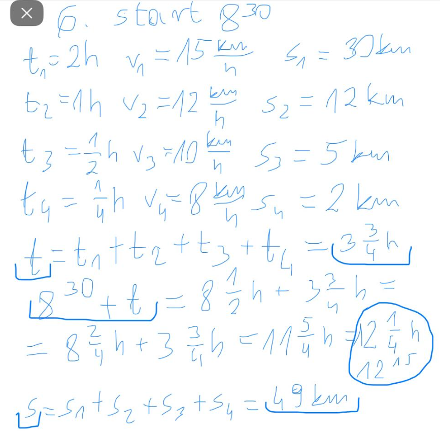

Z klasówki:
6. Tomek wyruszył na wycieczkę rowerową o godzinie 8:30. Rozpoczął ją z zapałem, więc przez pierwsze dwie godziny jechał z prędkością 15km/h. Przez następną godzinę poruszał się z prędkością 12km/h, po czym przez pół godziny z prędkością 10km/h. Ostatni kwadrans jechał z prędkością 8km/h. O której godzinie skończył wycieczkę i jaką drogę przejechał?

8. Ola idzie do szkoły z prędkością 5/4 m/s. Dom Oli jest odległy od szkoły o 0,75km. O której godzinie najpóźinej Ola musi wyjść z domu aby zdążyć do szkoły na godzinę 9:20?
9. Pieszy i rowerzysta wyruszyli z tego samego miejsca o godzinie 8:00. Mieli do pokonania dystans 18km. Wiadomo, że pieszy poruszał się z prędkością 6km/h oraz że rowerzysta dotarl do celu o godzinie 9:30. Jaka była odległość pomiędzy nimi po 20 minutach od startu?
Nowe (z drobnymi zmianami)
1. Dawid wyruszył na wycieczkę o godzinie 9:15. Przez pierwszą godzinę szedł z prędkością 10km/h, przez drugą godzinę z prędkością 8km/h, a ostatni półgodzinny etap pokonał z prędkością 5km/h. O której godzinie skończył wyprawę i ile metrów pokonał?
2. Zosia idzie do sklepu z prędkością 7/5 m/s. Żabka do której zmierza jest odległa o 0,75km. O której godzinie Zosia musi wyjść z domu, aby być w sklepie pół godziny przed 10:00?.
3. Rowerzysta i rolkarz wyruszyli z tego samego miejsca o godzinie 11:00. Mieli do pokonania dystans 10km. Wiadomo, że rolkarz poruszał się z prędkością 12km/h oraz że rowerzysta dotarł do celu o 11:30. Jaka była odległość między nimi po 15 minutach od startu?
Dziecinnie proste:
1. Jacek pokonywał zwykle drogę do szkoły w ciągu 12 minut, poruszając się z prędkością 8km/h. Dzisiaj zaspał i ten odcinek przeszedł w ciągu 16 minut. Z jaką prędkością się poruszał?
2. Kot porusza się z prędkością 40m/min. Ile czasu zajmie mu przejście 2 kilometrów?
3. Sowa z HP lecąca z prędkością 80km/h w ciągu 12 minut pokona ile metrów?